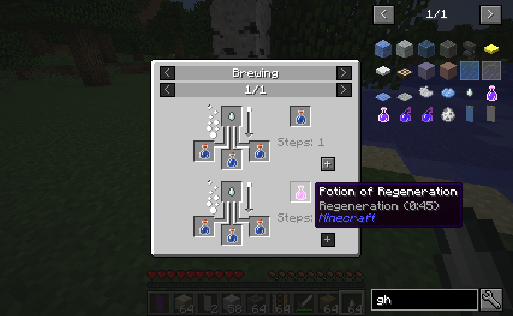
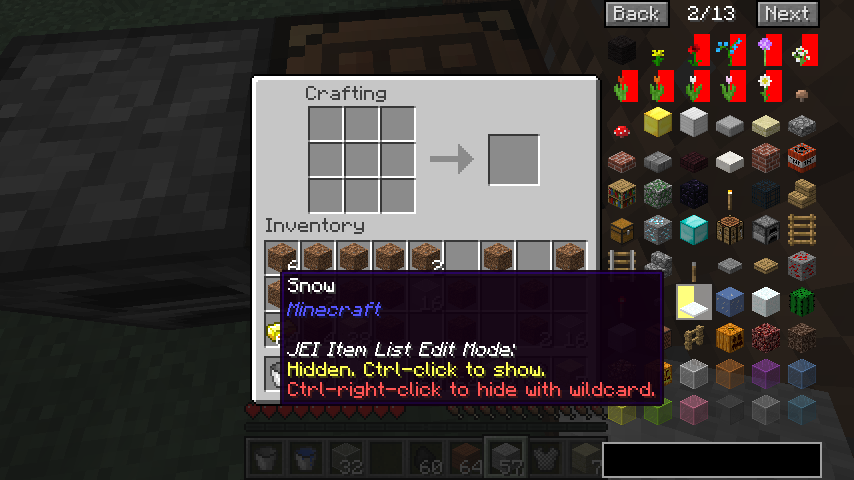
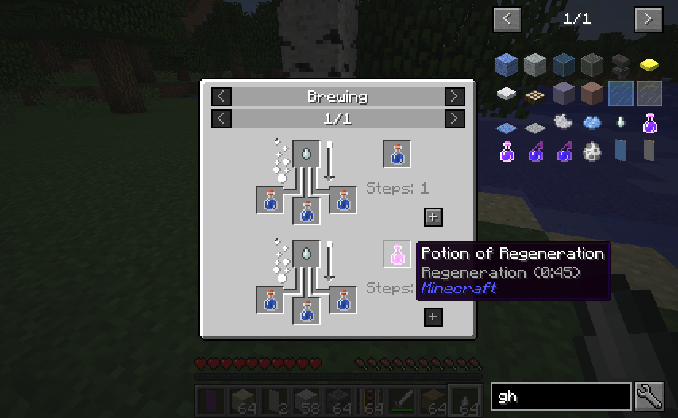
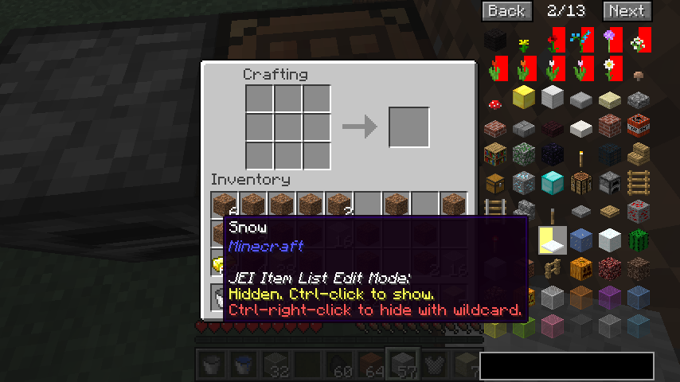
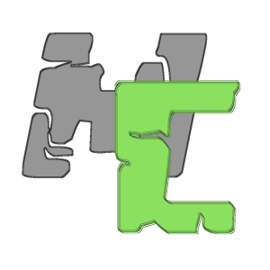

MCreator Mods 
OreSpawn
Mod that best demonstrates how bad MCreator actually is.
GregTech
GregTech is a "Total Conversion" mod, adding numerous Machines and Materialsas well as adjusting Recipes for existing Items in order to make them fit with its System, and to make everything work well together, compatible and mostly exploit-free whenever possible.
Advanced Rocketry
Advanced Rocketry is a mod about exploration and exploitation of other worlds and planets. Makes the graphics of video games released in the 90s look good in comparison.
Botania
{kind=link}
Botania is a tech mod that is themed around natural magic. Most of the info on Botania can be found inside the game, in the Lexica Botania, the mod's "documentation book".
Witchery
Witchery adds witchcraft and nature magic to Minecraft. Mod that single handedly got someone banned from the Modded Minecraft Discord server because someone else tried to port the mod to 1.12.2.
Top Modpacks
GregTech New Horizons
Versions:
1.7.10 - Deprecated
Modpack, featuring GregTech, with every recipe "Gregified". Gives new meaning to the term "Expert Pack".
Rats
Rats is a mod that adds, obviously, rats.
Quark Pack
Quark Pack is a modpack featuring many mods, such as Quark, Quark Oddities, and AutoRegLib. It aims to be a "Vanilla+" pack. Quark Pack mostly feels like playing Vanilla, but has additional features like the ability for parrots to say "Despacito" and cave generation so bad that it makes you want to donate money to the creator of Worley's Caves on Patreon.
Feed the Beast
Feed the Beast is an "all-around" modpack featuring a little bit of everything, from Academy and Continuum to Stoneblock and Revelation. Featured mods include DinnerBeef, aaronhowser1, progwml6, LatvianModder, and Vyraal1.
Teetotech
Teetotech is a modpack for those who do not quite feel they are ready for more advanced packs like GregTech. Diamond ore spawns on the surface and nether materials can be obtained in the Overworld.
Meet the Modders 🔥
Vazkii
Versions:
1.16.4A mod by Botania.
Landmaster
Versions:
1.15.2
Creator of LandCraft, PlusTiC, and others.
Deprecated
Reika
Versions:
1.12.2
Tfarecnim
Versions:
2.0Creator of a mod that caused p455w0rd to throw a hissy fit.
LatvianModder
Versions:
4.20.69Shadow leader of Feed the Beast.
King Lemming
{kind=link}
Deserves the Nobel prize for inventing enderium.
p455w0rd
Deserves to be shoved into a /dank/null.